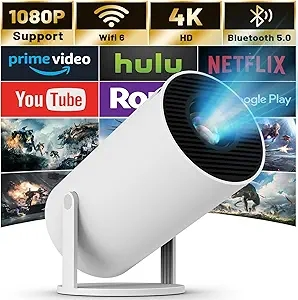
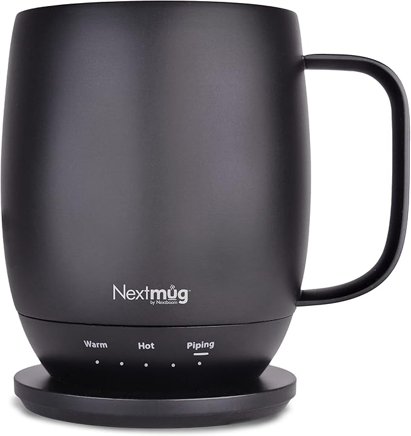
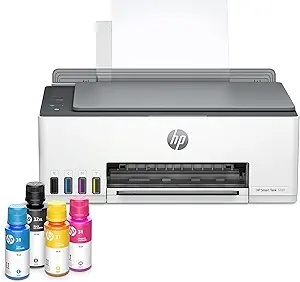
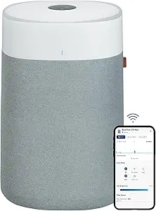
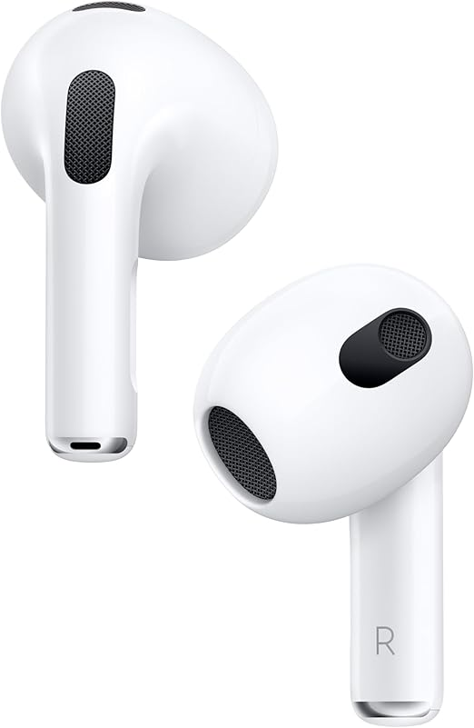
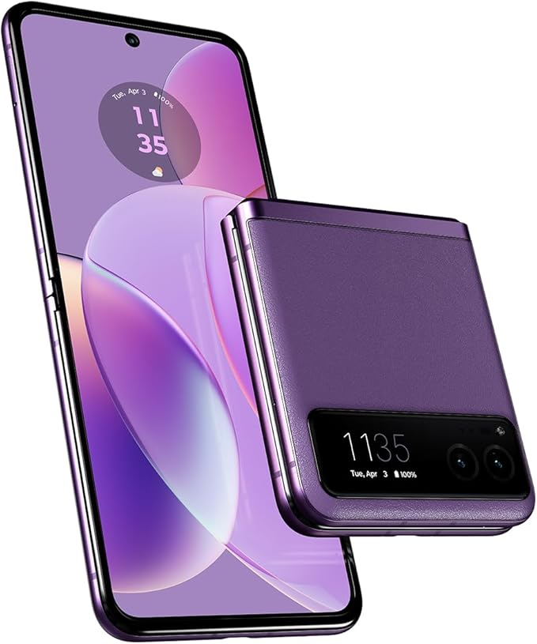
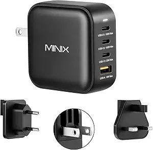
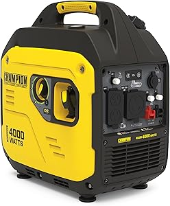
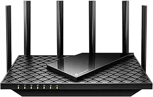

LG 27-Inch StanbyME Go: Shaashadda Taabashada ee Caqliga leh (2023 Model)

LG StanbyME Go waa shaashad 27-inch ah oo taabasho leh, oo bixisa muuqaallo 1080P ah oo tayo sare leh. Waxaa lagu sameeyay naqshad la qaadan karo oo loogu talagalay in lagu isticmaalo guriga ama safarka. Midabka "Calming Beige" wuxuu ku darayaa bilic deggan iyo dareen caqli-gal ah. Shaashadan LG StanbyME Go waa qalab cusub oo casri ah oo bixiya dareen is dhexgal iyo fudeyd isticmaal. Waxay leedahay shaashad taabasho ah oo cabbirkeedu yahay 27-inch, oo bixisa tayada muuqaal ee 1080P Full HD. Naqshadda qalabkan waa mid lagu qaadan karo, taasoo ka dhigaysa mid ku habboon in loo isticmaalo safarka, guriga, ama xafiiska. Waxay ku shaqeysaa nidaam caqli-gal ah oo kuu ogolaanaya inaad ku daawato filimada, ciyaaraha, ama barnaamijyada aad jeceshahay adoo isticmaalaya barnaamijyo caan ah sida Netflix iyo YouTube. Midabka "Calming Beige" wuxuu ku daraa muuqaal deggan oo soo jiidasho leh. Tani waa shaashad raaxo leh oo waafaqsan baahiyahaaga nololeed ee casriga ah.
Mini Projector oo leh WIFI 6 iyo Bluetooth (4K 1080P Taageero)
Mashruucan yaryar ee la qaadan karo wuxuu kuu ogolaanayaa inaad ku abuurto khibrad tiyaatar oo gurigaaga ah. Waxay taageertaa tayada muuqaalka 4K iyo 1080P, taasoo siinaysa muuqaal aad u cad oo midabo sax ah leh. Teknoolojiyada WiFi 6 iyo Bluetooth waxay fududeynayaan inaad ku xidhid qalabkaaga sida laptop-ka, PC-ga, ama taleefannada casriga ah. Waxay leedahay shaashad 130-inch ah oo 180° la rogi karo, taasoo ka dhigaysa mid ku habboon daawashada filimada, bandhigyada, ama ciyaaraha. Teknoolojiyada Auto Keystone waxay xaqiijineysaa inay si toos ah u hagaajiso muuqaalka. Waa qalab ku habboon guriga iyo safarka.
Nextmug - Koobka Kululeynta leh ee Xakamaynta Heerkulka
Nextmug waa koob heer sare ah oo ku ilaalinaya cabbitaankaaga heerkulka ugu fiican. Midabkeeda madow iyo cabbirka 14 oz ayaa ka dhigaya mid ku habboon dadka jecel kafada kulul ama shaaha. Muggan Nextmug waa xal raaxo leh oo loogu talagalay qofka jecel cabitaanka kulul sida bunka, shaaha, ama shukulaatada kulul. Waxay leedahay teknoolojiyad is-gubid ah oo ilaalinaysa heerkulka cabitaankaaga ilaa inta aad rabto. Waxaad si fudud u dejin kartaa heerkulka ugu habboon, waxaana ku jira batteri la dallaci karo oo shaqeeya saacado badan. Naqshadihiisa madow iyo cabbirka 14 oz. ayaa ka dhigaya mid moodo leh oo ku habboon isticmaalka guriga, xafiiska, ama safarka.
HP Smart Tank 5101: Daabacaha Dib loo Buuxin Karo ee Gurigaaga
HP Smart Tank 5101 waa daabacaha ink-tank ee waara oo bixiya daabac, koobbi, iyo iskaanno tayo sare leh. Waxay la socotaa kharash yar oo khad ah oo ku filan laba sano. Waa xalka ugu fiican ee guryaha casriga ah. Mashiinkan daabacadaha HP Smart Tank 5101 waa mid loogu talagalay in lagu daboolo baahiyahaaga daabacaadda, nuqulka, iyo sawir-qaadista. Waxay ku shaqeysaa tignoolojiyada wireless-ka oo kuu ogolaanaysa inaad si fudud ugu xidhid qalabkaaga sida laptop-ka ama taleefannada casriga ah. Waxay ku timaadaa laba sano oo tinta buuxda ah, taasoo ka dhigaysa mid dhaqaale ah. Mashiinku waa degdeg oo tayo sare leh, wuxuuna ku habboon yahay guriga ama xafiisyada yar yar. Tinta dib loo buuxin karo ayaa sidoo kale hubinaysa in aysan kharash badan kugu noqon mustaqbalka.
BLUEAIR Air Purifiers: Nadiifiyaha Hawada ee Qolalka Weyn
Blueair Air Purifiers waxay nadiifiyaan hawada qolalka waaweyn ilaa 3,048 sqft hal saac gudahood. Tignoolajiyada HEPASilent waxay si wax ku ool ah uga saartaa wasakhda, boodhka, iyo urta, taasoo ku habboon dadka qaba xasaasiyadda. Nadiifiyahan hawada Blueair waa xalka ugu habboon ee loogu talagalay qoysaska leh qolka waaweyn. Waxay nadiifisaa ilaa 3,048 sqft hal saac gudaheed iyadoo ku shaqeynaysa teknoolojiyada HEPASilent oo si waxtar leh u baabi’isa boodhka, urta, wasakhda, iyo xitaa fayraska. Waxay si gaar ah ugu fiican tahay dadka qaba xasaasiyadda, kuwa haysta xayawaanka, ama kuwa doonaya inay helaan hawada ugu nadiifsan. Nadiifiyuhu wuxuu leeyahay naqshad caqli badan oo fudud oo si sahlan loogu shaqeyn karo.
Apple AirPods (3rd Generation): Dhagaha-Dhegaha La'aanta Tayo Sare Leh
Apple AirPods 3 waxay bixiyaan maqalka "Spatial Audio" ee shaqsiga ah, biyuhu ma galaan, waxaana la socda kiiska lagu shubto. Waxay leeyihiin 30 saacadood oo nolol-batari ah si aad ugu raaxaysato maqalkaaga. AirPods-ka Apple (jiilka 3-aad) waa qalabka ugu fiican ee loogu talagalay kuwa jecel maqalka tayada sare leh. Waxay bixiyaan "Personalized Spatial Audio" taasoo kuu abuureysa khibrad maqalka 360° ah. Waxay sidoo kale leeyihiin iska caabin dhibco-biyo iyo dhidid, taasoo ku habboon ciyaaraha ama isticmaalka maalinlaha ah. Batteriga wuxuu soconayaa ilaa 30 saacadood, iyadoo lagu daray kiis dallacaad degdeg ah oo "Lightning" ah. Naqshadda yaryar ee fudud ayaa ka dhigaysa kuwo raaxo leh in la xidho muddo dheer.
Motorola razr (2023): Casriga Laalaabi Karo oo Isku-dhafan
Motorola razr waa taleefan cusub oo laablaaban karo, oo isku dara naqshad casri ah iyo muuqaal xarrago leh. Waxay ku shaqeysaa nidaam furfuran (unlocked), taasoo kuu oggolaanaysa inaad ku isticmaasho adeeg kasta oo ka shaqeeya Maraykanka. Taleefanka wuxuu leeyahay xusuusta 8GB RAM iyo 128GB kayd ah, oo taageeraya hawlgal degdeg ah. Kaamerada 32MP waxay bixisaa sawirro iyo fiidiyowyo tayo sare leh. Midabka "Summer Lilac" wuxuu ku daraa muuqaal gaar ah oo soo jiidasho leh.
MINIX NEO P3 100W Turbo: Xeedho Degdeg ah oo 4 Dekedood leh
MINIX NEO P3 waa xeedho degdeg ah oo leh 3 dekedood USB-C iyo hal USB-A. Waxay bixisaa awood ilaa 100W, oo ku habboon aaladaha kala duwan sida MacBook, iPad, iPhone, iyo qalabka Samsung. Charger-kan MINIX NEO P3 wuxuu leeyahay afar dekedood oo bixiya awood dallacaad degdeg ah oo ilaa 100W ah. Saddexda USB-C iyo hal USB-A waxay kuu oggolaanayaan inaad si fudud ugu dallacdo qalabyo badan sida MacBook, iPad, iPhone, ama Samsung Galaxy. Teknoolojiyada GaN waxay hubinaysaa waxtar sare iyo cabbir yaryar. Waa qalab muhiim ah oo loogu talagalay dadka jecel fudeydka iyo waxtarka.
Champion Power Equipment 4000-Watt Inverter Generator
Champion Generator waa jiil koronto oo la qaadan karo oo bixisa awood ilaa 4000 watt. Naqshadda degan iyo tikniyoolajiyada CO Shield waxay ka dhigayaan mid ammaan ah oo waara. Generator-kan Champion waa mashiin awood leh oo la qaadi karo, oo bixiya 4000 watt awood ah. Waxay ku habboon tahay isticmaalka RV, safarrada, ama xaaladaha degdegga ah. Teknoolojiyada "Quiet" waxay hubinaysaa in uu yahay mid aad u aamusan, halka tiknoolajiyada CO Shield ay bixiso badbaado dheeraad ah. Waa qalab waxtar badan oo waara oo ku habboon xaalado badan.
TP-Link AXE5400 Tri-Band WiFi 6E Router (Archer AXE75)
TP-Link AXE5400 waa router awood leh oo taageera ciyaaraha iyo VPN. Waxay bixisaa isku xirnaan degdeg ah oo xasilan iyadoo leh ilaalinta WPA3 iyo naqshad casri ah. Router-kan TP-Link AXE5400 wuxuu ku shaqeeyaa WiFi 6E, oo bixiya xawaare aad u sarreeya iyo isku xirnaan xasilloon. Waxay leedahay saddex isku xir oo kala duwan (tri-band), taasoo ka dhigaysa mid ku habboon ciyaaraha, qulqulka 4K, iyo isticmaalka VPN. Teknoolojiyada WPA3 waxay bixisaa badbaado sare, halka "OneMesh" ay kuu oggolaanayso inaad ballaariso shabakaddaada si fudud. Waa router aad u fiican oo waafaqsan baahiyaha casriga ah ee gurigaaga.